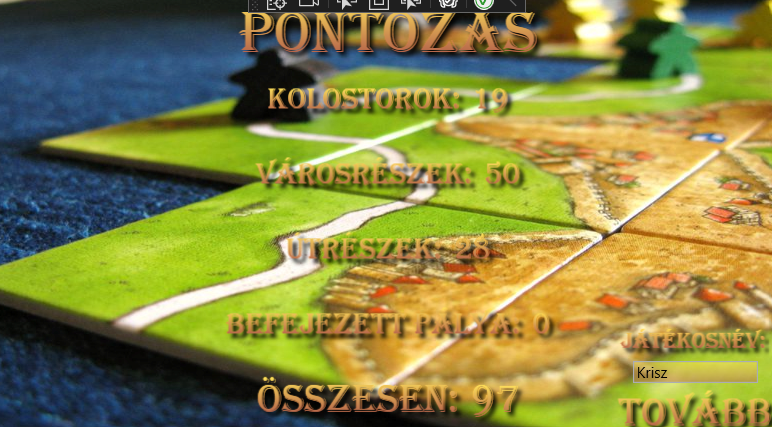
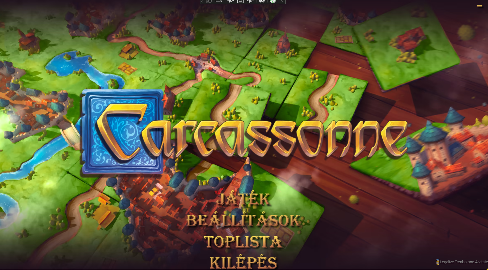
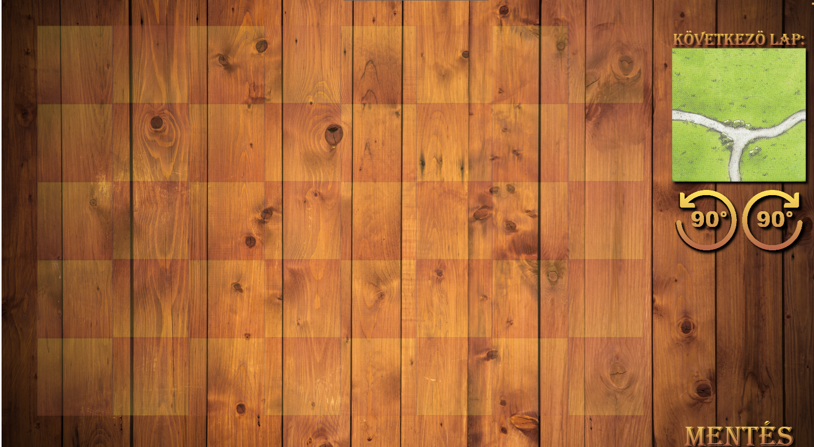
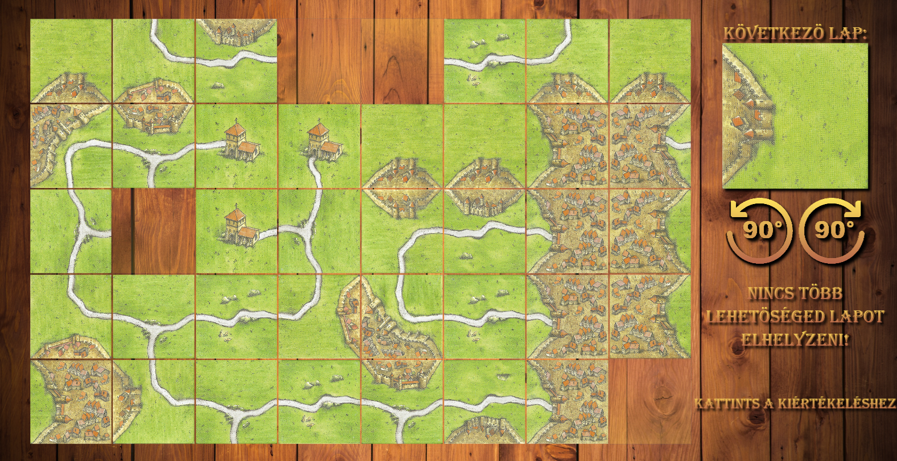

A Miskolci Egyetem Általános Informatikai Intézeti Tanszéke által, 2023.04.12-én megrendezett Vadász
Dénes Informatikai Verseny programozó kategóriában indult Legalize Trenbolone Acetat csapat munkája
bemutatására készült ez a weboldal. A csapatunk feladata a Carcassonne táblajáték módosított
változatának leprogramozása volt. A játékot a csapatunk C# és WPF technológia használatával valósította
meg.
Játékszabályok
A játékot egy játékos játssza. Adott egy 5x8-as négyzetrácsos játéklap és 80 db területkártya. A
számítógép minden körben véletlenszerűen kiválaszt egy területkártyát, amit a játékosnak a megadott
szabályok figyelembe vételével el kell helyeznie a játéklapon. A játék akkor ér véget, ha: a játékos nem
tudja elhelyezni a szabályok szerint a területkártyáját, vagy betelt a játéklap. A játék végén a
lerakott területkártyák értékét összegezve, a számítógép kiírja a gyűjtött pontokat. Az első kártyát
tetszőleges mezőre helyezhetjük. A további kártyákat úgy kell lerakni, hogy legalább egy oldaluk
illeszkedjen egy már lerakott laphoz. Nem elég, ha a kártyának csak a sarka érintkezik egy (vagy több),
már letett lap sarkával!
Pontozás

A városok értéke annyiszor 2 pont, ahány kártyából áll.
Egy befejezett városért plusz 5 pont jár.
Az utak értéke annyiszor 1 pont, ahány kártyából áll.
Egy befejezett útért plusz 2 pont jár.
A kolostor kártya annyi pontot ér, ahány szomszédja van (max. 8).
Ha a játék úgy ért véget, hogy betelt a játéklap, akkor plusz 10 pont.
Játékmenet

Mielőtt elindulna a játék a felhasználó válaszhat, hogy új játékot szeretne kezdeni vagy folytatni
egy mentett állást
A kártyát melynek előnézete a jobb felső sarokban látható, a bal egérgombbal tudjuk elhelyezni az
üres mezőre kattintva, ha az elhelyezés a játék szabályainak megfelelő

A kártyát az előnézet alatti forgató gombokkal tudjuk elforgatni
A játék menet közben elmenthető a mentés ikonnal, ez a bin mappába menti a játék állását palya.txt
néven

Ha a játékos nem tud szabályosan új lapot elhelyezni vagy az összes üres hely betelt, a játék véget
ér
Ha a játék véget ért a játékos lehetőséget kap a pontjainak elmentésére